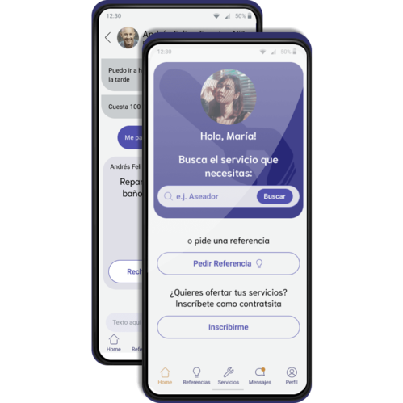

83% of users indicated that they found the contractor via a recommendation form someone or because they already knew them, thus we found most users prefer to feel close to the contractor, either because they aren't a stranger, or because they are a friend.
Handy - App
This app is a personal project, unafiliated with any employer
Definition
What?
Handy is a platform for offering and hiring home repair and maintenance services based in Colombia
How?
It is a user driven platform where people can advertise their expertise and hire other experts. Clients search for the service they need and then pick from a list of contractors.
Who?
The intended users are adults between 30 and 50 years old, who are either full time workers or caretakers and struggle to keep up with chores, as well as do maintenance tasks in their home.
Why?
There is a growing market of apps that manage and facilitate freelance employment, locally, there is a lack of apps specifically designed for cleaning and maintenance services.
Research
Heuristic Analysis
The main local competitor for the app was selected for a heuristic analysis, with the goal of evaluating the usability and user experience in order to propose relevant improvements and point out possible strengths. The analysis was based on Nielsen's 10 usability heuristics, which are a set of guidelines that help identify common usability problems.
1. Searching for Services: We found that the categorization of services could be overtly complex, and not very accurate to a real world interaction, confusing the user and adding unnecessary steps.

2. Choosing a contractor: In this step we found that it was important to earn the user’s trust by giving them ample information on the available contractors in order to match the screening that would happen in a real life situation regarding experience and expertise.
3. Asking for a service: While the form employed in the app allowed the users to closely monitor the system status and thus ensure all relevant information was exchanged, we found that it can come off as inrusive. It is also important to give the user control about which information they share at what stage of the interaction.
Benchmark
For this analysis we selected apps with the same functionality that operate in other regions as well as one app with a similar functionality but oriented towards doctors and medical care. This industry was chosen since it can face challenges regarding building trust between users and potential providers. We also went through the user reviews of these apps.
1. Interface:
- Messaging: While all of the apps analyzed had a direct messaging feature, we found that communication was not prioritized and user often faced misunderstandings regarding the expertise of the contractors and the services required.
- Previous hires: All of the apps incentivize the user to communicate with previously hired contractors, although in some cases the information was not organized in a dedicated list that was easy to find.
2. Searching and Service Lists:
All of the apps struggled to keep the categories easy to use as well as flexible enough for users to understand, while the search bar provided a more intuitive experience.
3. Profile
- Reviews: Those apps with an overall review score out of five, as well as a comment section, provided needed information for users who might otherwise struggle to trust the contractor
- Pictures: There was a necessity for allowing pictures in the requests and profile, given the nature of the services provided.
Questionnaire
A questionnaire was implemented in order to find out what prevents users from finding a contractor through an app or other online tool, and how likely users are to find contractors through recommendations from friends and acquaintances.
1. Familiarity
2. Responsibility
More than 50% of users said they made recommendations in both cases (house cleaning, and maintenance), however many of them also feared being responsible if something went wrong, especially if the recommendation was given to a friend or family member.
Personas
Based on the data gathered, these are some of the personas created
Andrew
Age: 33
Profession: Civil Engineer
Status: Single
"I need to hire someone to help me with household chores, but I want it to be a reliable person. I am very busy and sometimes I have to travel for work, so the person needs to be flexible with schedules."
Maria
Age: 40
Profession: Teacher
Status: Divorced
"I need someone who can do this repair for me. I work during the week so it can only be done on Saturday or Sunday. The most important thing is that it is done well, but if it is too expensive I might not be able to pay for it."

Carlos
Age: 44
Profession: Carpenter
Status: Married
"I have 10 years of experience in carpentry and I work in my own workshop, but only people in the neighborhood know me. I want to reach more people in this city and increase my income."
Design
User Journey
The following user journey was designed for Maria, the teacher, who needs to fix a leaky pipe.
Wireframes
These are some of the inital designs created for the app. For the home screen it was decided that later iterations there should be a clearer space for the call to action. Meanwhile, different arrangements for search result boxes were studied in order to get to the final positioning.
Initial look and feel
A design system was established, including principles, foundations and components of the app. Upon feedback, the color palette of the app was modified slightly as shown bellow:
Initial color scheme
Final color scheme
High Fidelity Prototype
The following is an interactive high-fidelity prototype of the app.
Projects

Amazon Gifts Redesign
- UX Research
- User Testing
- UI Redesign

Banner for Research Project
- Graphic Design
- Adobe Photoshop

Zenith Design Guide and App
- Design Guide
- High-fidelity Prototype
- Promotional Video

MealStats - WatchOS
- Task Flow
- Low-fidelity Prototype
- High-fidelity Prototype

App Handy
- UX Research
- UI Design
- High-fidelity Prototype